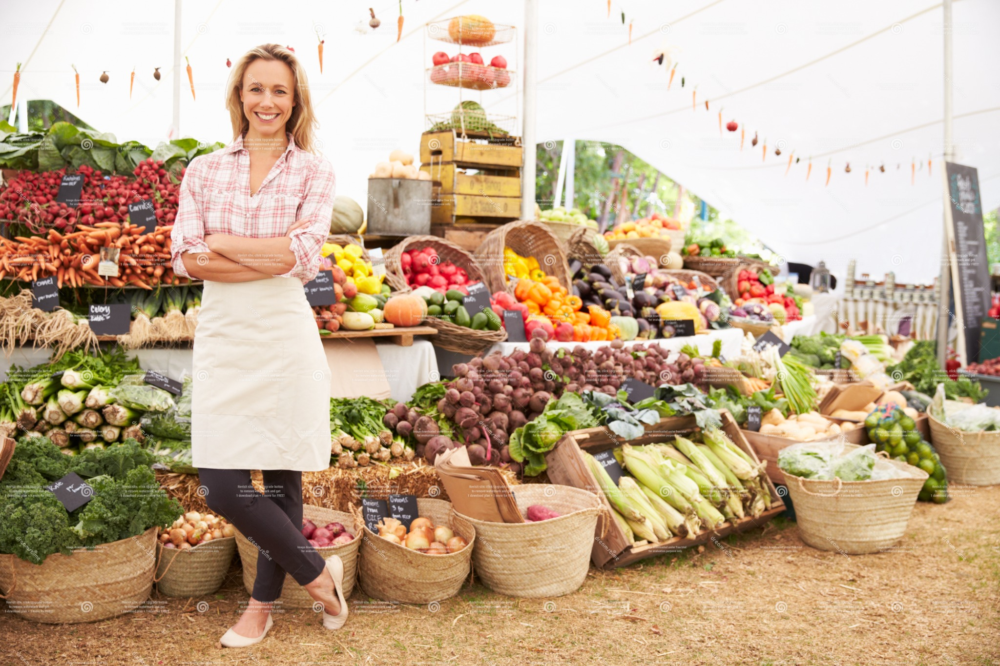

Skip to content
Home
Volunteer
Buy Local
Cut Waste
About
Resources
High Contrast
Large Text
Dyslexia Font
Buy local produce
Neighborhood market

Support local vendors
Innovative growing
LocalHarvest Farmers Markets
Open
USDA Farmers Market Directory
Open
Community Supported Agriculture (CSA) Finder
Open